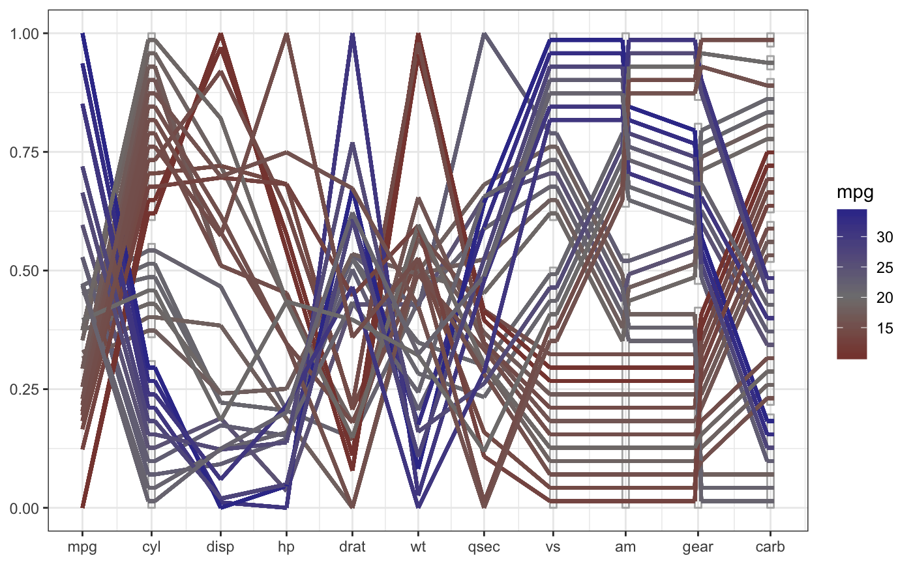

geom_pcp2.RdThe parallel coordinate plot displays multiple y-axes, and shows the observations across several dimensions as ploi-lines. This function work well with both numeric and categorical variables at the same time after proper scaling.
geom_pcp2(mapping = NULL, data = NULL, stat = "pcp2", position = "identity", ..., method = "uniminmax", freespace = 0.1, boxwidth = 0, rugwidth = 0, interwidth = 1, breakpoint = NULL, arrow = NULL, arrow.fill = NULL, lineend = "butt", linejoin = "round", na.rm = FALSE, show.legend = NA, inherit.aes = TRUE)
| mapping | Set of aesthetic mappings created by [aes()] or [aes_()]. If specified and `inherit.aes = TRUE` (the default), it is combined with the default mapping at the top level of the plot. You must supply `mapping` if there is no plot mapping. |
|---|---|
| data | The data to be displayed in this layer. There are three options: If `NULL`, the default, the data is inherited from the plot data as specified in the call to [ggplot()]. A `data.frame`, or other object, will override the plot data. All objects will be fortified to produce a data frame. See [fortify()] for which variables will be created. A `function` will be called with a single argument, the plot data. The return value must be a `data.frame`, and will be used as the layer data. |
| stat | The statistical transformation to use on the data for this layer, as a string. |
| position | Position adjustment, either as a string, or the result of a call to a position adjustment function. |
| ... | Other arguments passed on to [layer()]. These are often aesthetics, used to set an aesthetic to a fixed value, like `colour = "red"` or `size = 3`. They may also be parameters to the paired geom/stat. #' |
| method | which method should be used to transform the values of each variable into acommon y axis? See `transform_pcp` for details. |
| freespace | The total gap space among levels within each factor variable |
| boxwidth | The width of the box for each factor variable |
| rugwidth | The width of the rugs for numeric variable |
| interwidth | The width for the lines between every neighboring variables, either a scalar or a vector. |
| breakpoint | To break three or more factors into peices |
| arrow | specification for arrow heads, as created by arrow() |
| arrow.fill | fill colour to use for the arrow head (if closed). NULL means use colour aesthetic |
| lineend | Line end style (round, butt, square) |
| linejoin | Line join style (round, mitre, bevel) |
| na.rm | If `FALSE`, the default, missing values are removed with a warning. If `TRUE`, missing values are silently removed. |
| show.legend | logical. Should this layer be included in the legends? `NA`, the default, includes if any aesthetics are mapped. `FALSE` never includes, and `TRUE` always includes. It can also be a named logical vector to finely select the aesthetics to display. |
| inherit.aes | If `FALSE`, overrides the default aesthetics, rather than combining with them. This is most useful for helper functions that define both data and aesthetics and shouldn't inherit behaviour from the default plot specification, e.g. [borders()]. |
library(ggplot2) library(dplyr) mtcars %>% mutate(cyl = factor(cyl), vs = factor(vs), am = factor(am), gear=factor(gear), carb = factor(carb)) %>% gather_pcp(1:ncol(mtcars)) %>% transform_pcp(method = "uniminmax") %>% ggplot(aes(id = id, name = name, value = value, level = level, class = class)) + geom_pcp_box(boxwidth=0.1, fill=NA, colour="grey70") + geom_pcp(aes(colour = mpg), boxwidth=0.1, breakpoint=9:10, size=1, alpha =0.9) + scale_colour_gradient2("mpg", mid="grey50", midpoint = 20) + theme_bw()